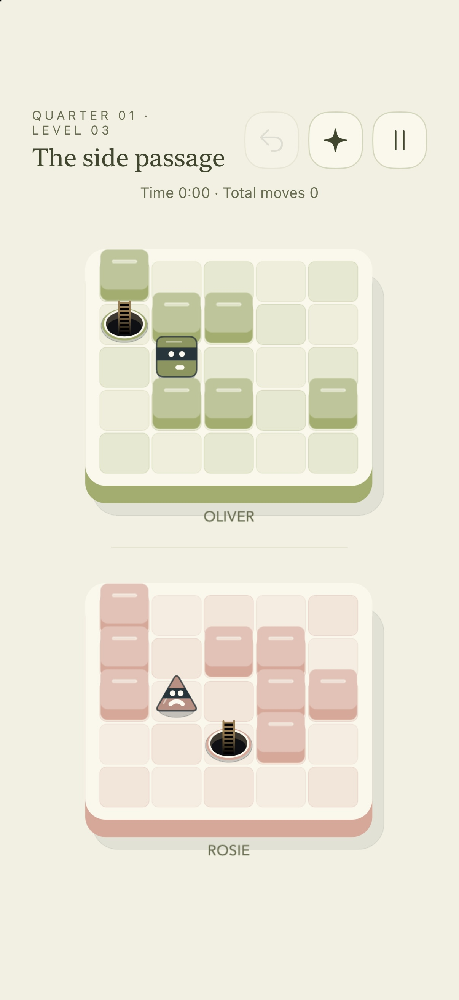
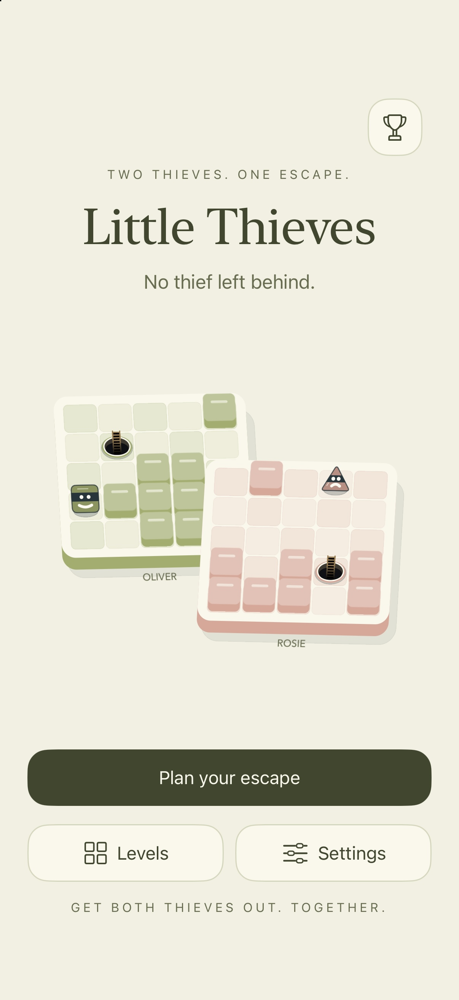
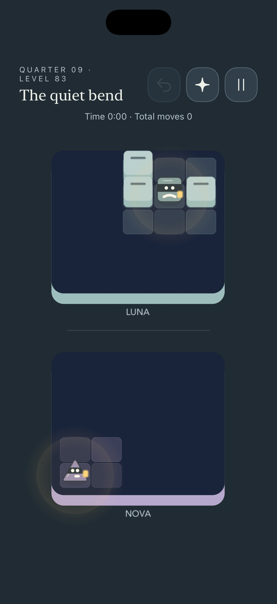

01 / FIND YOUR RHYTHM
Two paths. One clever plan.
Think a few steps ahead, try a new direction, and enjoy that lovely moment when everything clicks.
A LITTLE ADVENTURE, TOGETHER
A peaceful puzzle game for a wonderfully curious mind. Guide two little thieves through charming courtyards, one shared move at a time.
Find your way togetherMade for iPhone & iPad · Play at your own pace

200courtyards to explore
20Quarters to discover
2thieves, moving together
Zeroads. Just a little escape.
SMALL STEPS. SHARED ADVENTURES.
One move guides them both. A wall may stop one while the other keeps going. Find a path that brings your little duo to their exits, together.

Think a few steps ahead, try a new direction, and enjoy that lovely moment when everything clicks.

Venture into the Moonlit Quarter, where a warm lantern reveals your next steps through the dark.
Settle into Relaxed mode with hints and unlimited Undo, or put your planning to the test in Expert. There’s no timer rushing you along.
A little patience. A little teamwork. A way out.
A NOTE TO THE CREATOR
Have a question, found a tricky little bug, or just want to say hello?
I’d love to hear from you.
Game questions, feedback & privacy inquiries.
YOUR PROGRESS IS YOURS
Privacy policy
Last updated: October 24, 2026
No ads. No third-party analytics.
No separate account required.
Little Thieves is a puzzle game developed by Ian Dorosh. This policy explains how the app handles information when you play, save your progress, and use iCloud syncing.
The app does not require a separate account, display advertisements, or include third-party advertising or analytics SDKs. Your game saves are stored on your device and, when available, in your iCloud account. The app does not send your game saves to a server operated by the developer.
Little Thieves stores information needed to run the game and remember your choices:
This information supports saving, restoring, syncing, and displaying your progress. The installation identifier is not used for advertising or tracking you across other apps or websites.
When iCloud is available for the app, Little Thieves automatically uses Apple's iCloud key-value storage to sync progress and preferences across devices using the same Apple Account. The game can also be played without iCloud, with progress saved locally.
Apple processes information required to provide iCloud under its Privacy Policy. The app does not receive your Apple Account password or email address, and it does not provide the developer with access to your private iCloud game saves.
Little Thieves does not display ads, access your advertising identifier, or use third-party tracking or analytics services. The app does not sell game-save information or share it with advertising networks.
Local saves and preferences remain on your device between play sessions. Synced saves remain in iCloud so that your progress can be restored on another installation. There is no automatic expiration period for game saves.
To start a new playthrough, open Settings → Gameplay → Clear progress and start over. This resets your current puzzle, completed levels, achievements, and gameplay statistics. When iCloud is available, the reset is synced to your other devices as they reconnect. Your preferences and introduction status are retained.
Starting over is a gameplay reset, not a complete deletion of every stored record: sync identifiers and reset information remain, and older per-installation records may remain in iCloud even though the game no longer uses their previous playthrough progress.
Deleting the app removes its local app data; offloading the app can retain it. Deleting the app does not itself delete iCloud saves or device backups, and a synced save may return after reinstalling. Use Apple's device and iCloud settings to manage available app storage, backups, and iCloud access. Disabling syncing does not by itself erase previously stored information.
If you contact the developer, the developer receives the information you choose to include, such as your email address and message. Please avoid sending sensitive personal information or your Apple Account password. You can use the contact address below to ask about information you have supplied or request its deletion.
The app does not ask players to provide their name, age, email address, location, or other contact information to play. Its local saving and iCloud features work as described above for all players. A parent or guardian can contact the developer with privacy questions.
This policy may be updated when the app's features or information practices change. The date at the top identifies the latest revision.
Developer: Ian Dorosh
Privacy contact: ian.dorosh@outlook.com